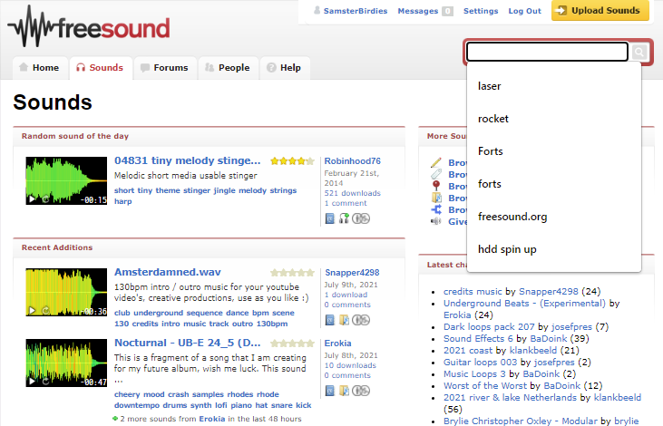
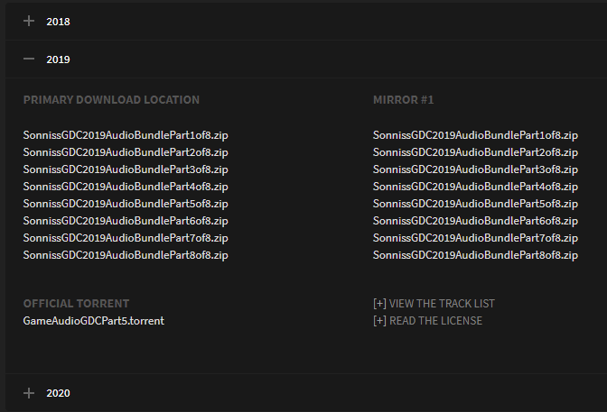

SamsterBirdies Post SamsterBirdies Post
SamsterBirdies Post SamsterBirdies PostI highly recommend using public domain / CC0 licensed sounds for your project
1. Freesound.orgThis is a website where users can upload sounds and download them. Note: Sound previews on the website are lossy with low quality. Must download to hear full quality. Pros:-Lots of sounds for almost anything with lots of users. -Sound preview feature. -Remix groups. -Geotags. Cons:-Not all sounds are CC0. You can filter to only show CC0 sounds however. -Site can perform very slowly at times. -Anybody can upload sounds, so quality varies from very good to straight up awful. -Requires logging into an account to download sounds. -Is light mode (you probably already could tell) |
2. Soniss Gameaudio GDCThis website has yearly archives for free sound effects designed for game developers. Tip: You can use the torrents to browse and select specific folders to download. I recommend using qBittorrent (which is FOSS), and a VPN to hide IP (Windscribe has free 10GB per month). Pros:-Very good quality sound effects. -All sounds are free to use commercially without attribution -Has torrents for fast download. -New sound collections every year Cons:-Can't search for specific sounds. Can only download random packs of sounds. -Very slow download without using torrents. |